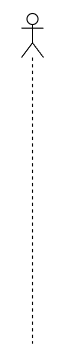
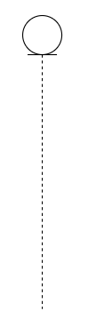
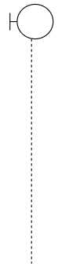
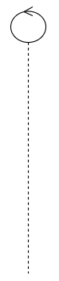
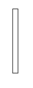
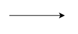
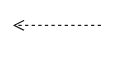

Below are the different symbols used in the previous example.
Actor and Lifeline
 The actor is used when a use case is being represented in a sequence diagram and it's lifeline represents the life of the actor and all other elements during the execution of the sequence of events.
Entity
 The entity represents the data about the customer and hold all of that data for the system.
Boundary
 The boundary represents the interface of the ice cream example and is a system boundary.
Control
 The conrol organizes and schedules how and when the boundaries and entities communicate.
Activation Bar
 An activation bar represents when the object is instantiated during the use case.
Synchronous Message
 A synchronous message symbol represents the time when the sender must wait for a response to continue.
Return Message
 A return message symbol is used when an object returns to the sender.